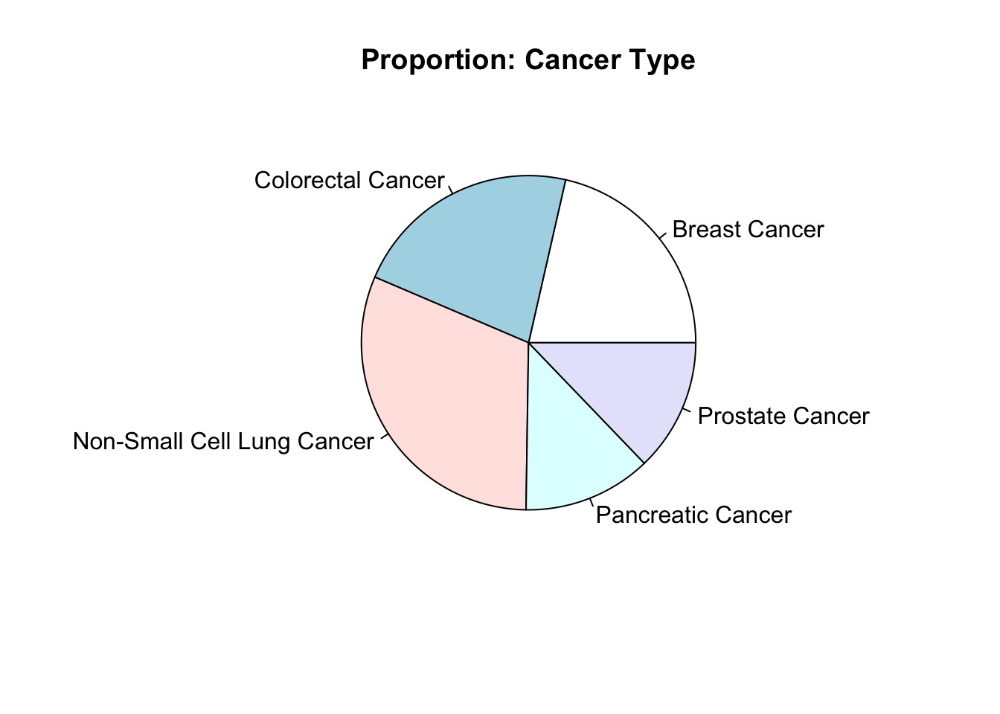
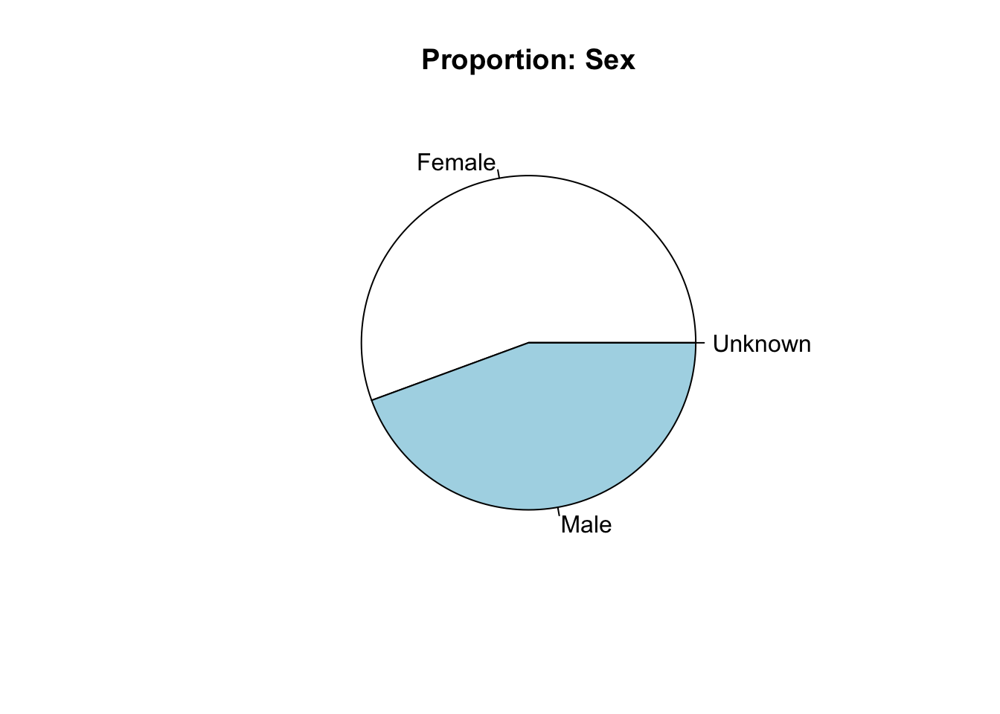
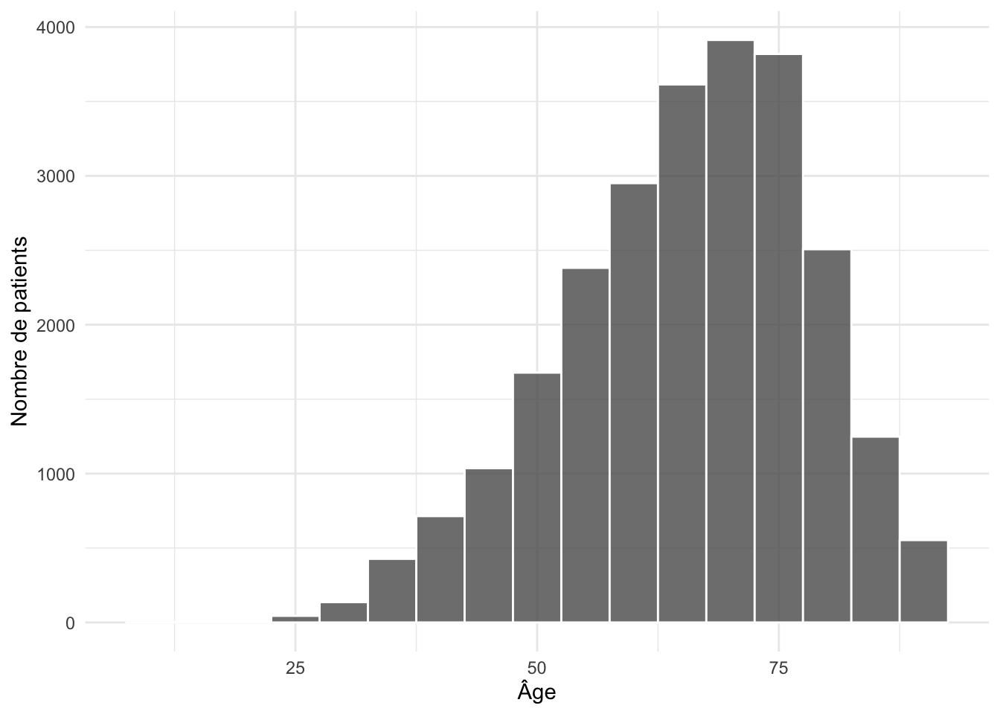
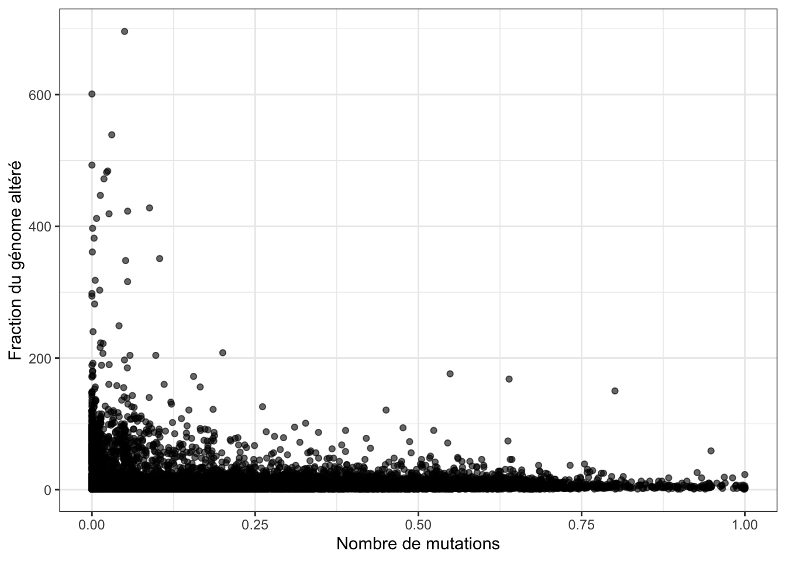
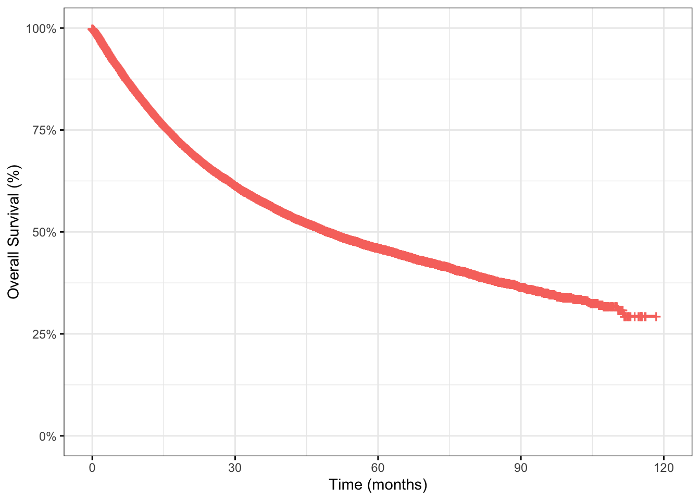

pie_plot <- function(var, titre) {
counts <- table(df[[var]])
labels <- names(counts)
pie(counts, labels = labels, main = titre)
}Partie 1 : Exploration des données
Dans cette première partie, nous explorons les données issues de cet article : Jee et al. (2024). Nous nous appuyerons dessus tout au long de notre étude.
Il s’agit de données issues d’un séquençage ciblé de 25 040 tumeurs provenant de 24 950 patients et de leurs échantillons normaux appariés via la plateforme MSK-IMPACT.
On s’intéresse tout d’abord aux proportions et distributions des variables cancer type, age et sex. Celles-ci semblent équilibrées.
Le graphique “Fraction Genome Altered vs Mutation count” permet d’étudier deux dimensions de l’instabilité génomique : mutationnelle vs chromosomique. Smith, Parl, and Dupont (2023)
Le Kaplan-Meier plot (KM plot) visualise la survie globale des patients. Il permet d’évaluer l’impact de caractéristiques moléculaires ou cliniques sur la survie. Tang et al. (2023)
Dans notre cohorte (poumon, colorectal, sein, prostate et pancréas), la relation entre mutation count et fraction of genome altered suit une forme inverse : certains échantillons ont un très fort nombre de mutations mais peu d’altérations chromosomiques, et d’autres l’inverse. Cette opposition suggère deux modes majeurs d’instabilité. La majorité des tumeurs restent toutefois en bas à gauche, correspondant à des profils plus stables. Du côté de la survie, le Kaplan–Meier montre qu’au bout de 60 mois (~5 ans), 45 % des patients sont encore en vie.
Pie Plot - Cancer Type et Sex
pie_plot("Cancer.Type", "Proportion: Cancer Type")
pie_plot("Sex", "Proportion: Sex")
Histogramme de la répartition des âges
ggplot(df, aes(x = Current.Age)) +
geom_histogram(binwidth = 5, color = "white", alpha = 0.8) +
theme_minimal() +
labs(
x = "Âge",
y = "Nombre de patients"
)
Fraction Genome Altered vs Mutation count
ggplot(df, aes(x = Fraction.Genome.Altered, y = Mutation.Count)) +
geom_point(alpha = 0.6) +
theme_bw() +
labs(
x = "Nombre de mutations",
y = "Fraction du génome altéré"
)
Pearson : -0.05536964 Spearman : 0.1538545 KM plot : Overall (months)
ggsurvplot(
fit,
data = df,
conf.int = FALSE,
risk.table = FALSE,
xlab = "Time (months)",
ylab = "Overall Survival (%)",
ggtheme = theme_bw(),
surv.scale = "percent",
legend = "none"
)Warning: Using `size` aesthetic for lines was deprecated in ggplot2 3.4.0.
ℹ Please use `linewidth` instead.
ℹ The deprecated feature was likely used in the ggpubr package.
Please report the issue at <https://github.com/kassambara/ggpubr/issues>.
References
Jee, Justin, Christopher Fong, Karl Pichotta, Thinh Ngoc Tran, Anisha Luthra, Michele Waters, Chenlian Fu, et al. 2024. “Automated Real-World Data Integration Improves Cancer Outcome Prediction.” Nature 636 (8043): 728–36. https://doi.org/10.1038/s41586-024-08167-5.
Smith, Jeffrey R., Fritz F. Parl, and William D. Dupont. 2023. “Mutation Burden Independently Predicts Survival in the Pan-Cancer Atlas.” JCO Precision Oncology 7 (June): e2200571. https://doi.org/10.1200/PO.22.00571.
Tang, Doudou, Mingjie Chen, Xinhua Huang, Guicheng Zhang, Lin Zeng, Guangsen Zhang, Shangjie Wu, and Yewei Wang. 2023. “SRplot: A Free Online Platform for Data Visualization and Graphing.” PLOS ONE 18 (11): e0294236. https://doi.org/10.1371/journal.pone.0294236.